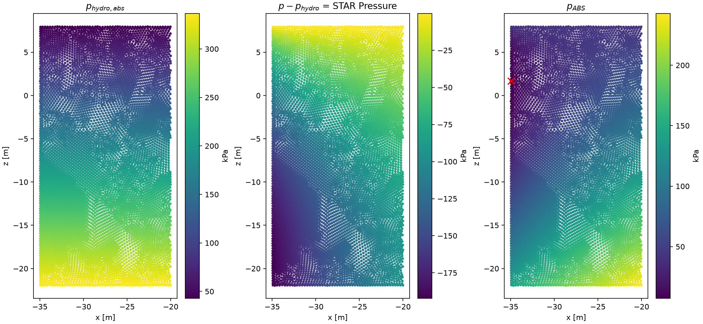
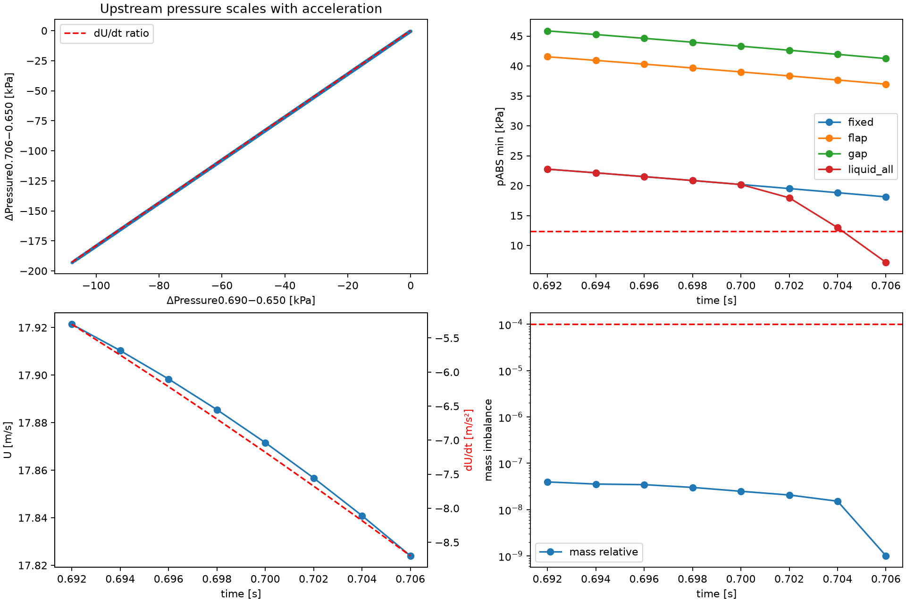
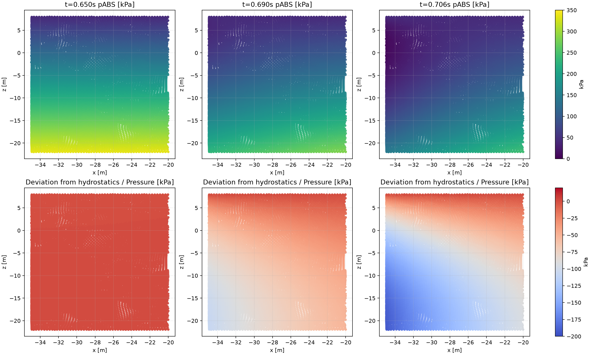
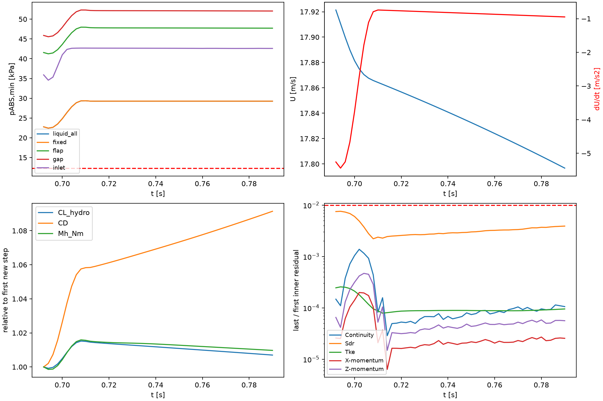

Przyczyna: narzucone szybkie hamowanie wody wymaga gradientu ciśnienia. Przy zadanym ciśnieniu piezometrycznym na top/outlet powstaje rozległe podciśnienie przed płatem. To odpowiedź bezwładnościowa tej domeny i jej warunków brzegowych; nie dowód kawitacji przy płacie.
Przyrosty Pressure od t=0,650 s w 12 464 komórkach przed płatem skalują się współczynnikiem 1,791268; stosunek |dU/dt| wynosi 1,789649 (różnica 0,09%). R²=0,9999999866; błąd RMS dopasowania 5,58 Pa. Hamowanie wzrosło z 4,86 do 8,697696 m/s², mimo zmiany U o zaledwie 0,108 m/s.
Background, centroid (−34,9668721; 0,020; 1,6569813) m. Do wlotu 0,0331279 m, do top 6,3430187 m, bottom 23,6569813 m, outlet 79,9668721 m; do obu granic rozpiętości po 0,01 m. Numer wiersza danych CSV 21719, nie globalny identyfikator komórki STAR. Status aktywny 0, błąd Overset 0, jakość 0,918209; objętość 3,49463e−4 m³. Minimum nie jest komórką interpolowaną ani nieaktywną.
54 komórki poniżej progu; łączna objętość 0,0599121 m³, środki x∈[−34,9669;−34,3660], z∈[−1,8174;4,5402] m. 21 z 30 najbliższych komórek także poniżej progu: rozległy obszar, nie pojedynczy pik.
ρ=1000 kg/m³, g=9,8100004196 m/s², p_ref=101325 Pa, z_ref=2 m. W całym eksporcie zachodzi pABS=Pressure+101325+ρg(2−z), z błędem ≤1,75e−10 Pa. W komórce minimum: hydrostatyczne pABS=104690,0135 Pa, Pressure=−97514,5312 Pa, razem 7175,4823 Pa. Nie stwierdzono podwójnego doliczenia hydrostatyki ani błędu referencji.
Inlet: składowe (U,0,0), intensywność turbulencji 0,001, stosunek lepkości 10. Top: Pressure Outlet, zerowe ciśnienie piezometryczne, kierunek backflow EXTRAPOLATED. Outlet: to samo ciśnienie, kierunek BOUNDARY_NORMAL. Bottom: slip; span: symmetry. Domena z definicji geometrii [−35,45]×[0,01,0,03]×[−22,8] m. Native readback t=0,650 oraz kod następujących makr dokumentują niezmienione referencje i typy granic. Nowy test zapisuje ponowny odczyt natywny.
Próg 12 339,2148 Pa zostaje bez zmian, globalnie i lokalnie. 7,175 kPa jest powyżej ciśnienia pary, lecz nie zachowuje wymaganego zapasu 10 kPa. Nie wykluczono wlotu z kontroli.



Bilans masy pozostaje bardzo dobry. Residuale liczone z dokładnie 50 iteracji każdego kroku: ostatni ω=0,0124542, czyli FAIL przy progu 0,01. Wartość 0,00850196 dotyczy t=0,696 s. Przyczyną zatrzymania była globalna presja; residual nie jest przemianowany na PASS.
| time_s | U_m_s | dU_dt_m_s2 | p_absolute_min_Pa | mass_imbalance_relative | CL_hydro | CD | Mh_Nm | Sdr |
|---|---|---|---|---|---|---|---|---|
| 0.692 | 17.921363 | -5.2987804 | 22754.627 | 3.9651812e-08 | 0.32022962 | 0.0071585702 | -11.751974 | 0.007464359 |
| 0.694 | 17.910316 | -5.750646 | 22141.517 | 3.5633683e-08 | 0.31976135 | 0.0071627817 | -11.725099 | 0.0078263158 |
| 0.696 | 17.898353 | -6.2148904 | 21504.47 | 3.4598968e-08 | 0.31927302 | 0.007168864 | -11.696925 | 0.0085019649 |
| 0.698 | 17.885449 | -6.690816 | 20853.525 | 3.0162059e-08 | 0.31876944 | 0.0071768265 | -11.667684 | 0.0092754444 |
| 0.7 | 17.871582 | -7.1777344 | 20189.068 | 2.4874095e-08 | 0.31825037 | 0.0071867721 | -11.637383 | 0.009980503 |
| 0.702 | 17.856731 | -7.674966 | 17968.013 | 2.0706799e-08 | 0.31771581 | 0.0071988198 | -11.606025 | 0.010823388 |
| 0.704 | 17.840876 | -8.1818404 | 12979.781 | 1.5203849e-08 | 0.31716535 | 0.0072129947 | -11.573609 | 0.011629222 |
| 0.706 | 17.823998 | -8.697696 | 7175.4823 | 1.0091722e-09 | 0.31659936 | 0.0072294844 | -11.540167 | 0.012454209 |
Spowolnienie parametru czasu dotychczasowej funkcji S5. Od t=0,690 s płynne przejście szybkości fazy z 2,5/s do 0,25/s przez 0,020 s; U, dU/dt i d²U/dt² pozostają ciągłe. Pozostała część redukcji kończyłaby się przy t=4,200 s. Jeden test 50 kroków (do t=0,790 s): U osiąga 17,796725 m/s, czyli mniej niż przy poprzednim zatrzymaniu. Maksymalne początkowe hamowanie 5,439 m/s² zamiast narastania do 37,5 m/s². Predykcja na podstawie starych pól daje minimum ok.22,56 kPa; jest wyłącznie predykcją, a nie kryterium zaliczenia.
50 kroków, t=0,690→0,790 s, iteracje12360→14860, U=17,93152→17,796725 m/s, δ=0°. Najniższe pABS podczas całego testu: 22,443 kPa; przy wlocie 34,567 kPa. Końcowe minimum globalne 29,264 kPa; inlet42,604 kPa, klapka47,720 kPa, szczelina52,060 kPa. W starej komórce minimum jest teraz94,211 kPa.
Przy dokładnie tej samej U=17,8239976 m/s: poprzednio7,175 kPa, po poprawce29,268 kPa. Przyspieszenie jest dziesięciokrotnie mniejsze. To kontrolowana interwencja potwierdzająca mechanizm ciśnienia bezwładnościowego.
Wszystkie50 okien residuali spełniają pierwotny próg0,01 dla kontrolowanych równań. Maksimum ω w ostatnich25 krokach:0,00390206. Y-momentum zachowuje wcześniejsze jawne wyłączenie dla quasi2D ze względu na normalizację4,9145e−16; nie jest prezentowane jako spełniające ten sam próg. Maksymalny względny niezbilansowany strumień masy1,74214e−7. Overset:333939komórek,255350aktywnych,77108nieaktywnych,1481acceptorów,0błędów i0trudnych interpolacji. MinV=9,12875e−12m³, minQ=0,0610482; brak zmiany pozycji klapki.
Siły pozostają przejściowe. Odczyt początkowy zgadza się dokładnie z checkpointem. Na końcu CL=0.322481038, CD=0.007813843, Mh=-11.867039Nm. CD wzrósł o9.19% podczas zmiany przepływu; to nie jest zaakceptowany punkt statyczny. Średnia składowa U w pierwszej warstwie przy wlocie17,796778m/s, w obszarze przed płatem17,925291m/s: pole nie jest jeszcze ustalone. Pełna interpretacja sił wymaga etapów stabilizacji i kontroli siatki/czasu. Dotychczasowe bramki sił pozostają bez zmian.

Checkpoint: F:/ntnu/flap_control/hydro_validation_2606_20261102/cases/INLET_PRESSURE_RECOVERY_20261103/run_20261103_120108/checkpoint.sim
Rozmiar:1525998405B
SHA-256:78b729a0413047f01a271bc28e7575be9e9456518102ff25a816870f75ccbbc5
Zapis natywny kompletny; STAR-info odczytał Step395, Time0,79, Iter14860, Np8. Sprawdzono nagłówek i integralność; nie wykonano dodatkowego pełnego otwarcia nowego rozwiązania w solverze.
GO: poprawka tempa hamowania do dalszej diagnostyki. Kontynuacja przygotowana w istniejącym kontrolerze, skompilowana;15 izolowanych testów zabezpieczeń PASS. Nie rozpoczęto pełnej kampanii. Nowy identyfikator RECOVERED_FIXED_PLUS2_SWEEP_20261103; poprzednie FAIL pozostają zablokowane. W04 nietknięty.
HOLD uruchomienia: F: ma 13.54GiB wolnego przy wymaganych15GiB; trzeba odzyskać co najmniej1.46GiB. Sprawdzony launcher odmawia startu przy tym stanie. Nic nie usunięto i progu nie obniżono. Po zapewnieniu miejsca: F:\ntnu\flap_control\START_RECOVERED_FLAP_SWEEP.cmd. Kolejność: kontynuacja hamowania do10 (t=4,2), stabilizacja0°, płynna klapka+2° przy10, stabilizacja, następnie12/14/16/18 tylko po bramkach. Brak autostartu po restarcie systemu.
Wynik testu JSON · Ocena sił · Stan końcowy
{
"root_cause": "Fast imposed inlet deceleration produces a domain-scale inertial pressure depression under fixed piezometric pressure at top/outlet; global minimum occurs where this depression combines with the hydrostatic head.",
"confidence": "Strong field evidence; corrective test provides causal intervention. Does not constitute grid/time validation.",
"reporting_identity_max_error_Pa": 1.7462298274040222e-10,
"spatial_fit": {
"upstream": {
"cells": 12464,
"fit_slope": 1.791267602655216,
"intercept_Pa": -12.334473689964629,
"R2": 0.9999999865552589,
"rms_error_Pa": 5.579476521648665,
"predicted_acceleration_ratio": 1.7896493827160522,
"mean_u_change": -0.0523850360644071
},
"inlet5m": {
"cells": 2636,
"fit_slope": 1.7910490574128386,
"intercept_Pa": -26.989193442288567,
"R2": 0.9999999846221009,
"rms_error_Pa": 6.092444429749155,
"predicted_acceleration_ratio": 1.7896493827160522,
"mean_u_change": -0.0911351437247772
},
"near_foil": {
"cells": 109698,
"fit_slope": 1.8457752049533487,
"intercept_Pa": 401.21698732165174,
"R2": 0.9947190431146096,
"rms_error_Pa": 150.19456912523836,
"predicted_acceleration_ratio": 1.7896493827160522,
"mean_u_change": -0.007975253445386975
}
},
"boundary_distances": {
"inlet_m": 0.0331278772649668,
"outlet_m": 79.96687212273503,
"top_m": 6.343018693353709,
"bottom_m": 23.65698130664629,
"span_low_m": 0.0099999999999999,
"span_high_m": 0.010000000000000099
},
"pressure_threshold_Pa": 12339.214766776897,
"isolated_cell": false,
"low_cells": 54,
"low_volume_m3": 0.05991214625647269,
"min_cell_status": "active=0; normal cell type=0; error=0; not an acceptor",
"min_cell_quality": 0.9182090181121052,
"last_Sdr_ratio": 0.012454208586954212,
"residual_threshold": 0.01,
"residual_window_exact_50": true,
"physical_cavitation_claim": false,
"explanation": "7.175 kPa remains above vapor pressure 2.339 kPa, but violates the required extra 10 kPa margin. Single-phase SST does not model vapor formation.",
"minimum_fix": "Only C2 reparameterization of the existing quintic U(t), preserving U and its first two derivatives at t=.690; phase-rate2.5 to0.25/s over.020s, then0.25/s; initial transient max deceleration5.439m/s2, later maximum3.75m/s2.",
"not_changed": [
"inlet/outlet/top/bottom types",
"pressure reference/altitude",
"geometry/gap/mesh",
"Overset",
"SST/URF/discretization",
"dt0.002",
"inner50",
"global and local pressure guards"
],
"remaining_uncertainty": [
"Persistent STAR global cell ID was not exported; centroid and region identify the cell unambiguously in the unchanged mesh.",
"Exact temporal residual convergence remains separately checked; final failed-step Sdr did not pass.",
"Three saved field snapshots cannot independently prove absence of every reflection; spatial smoothness and acceleration scaling support inertial response, with no evidence of an isolated reflected wave or runaway instability.",
"Quantitative outer-boundary/grid/time uncertainty and physical interpretation of the artificial water domain remain open."
],
"test_status": "RUNNING_OR_PENDING_NATIVE_RESULT",
"campaign": "HOLD until test review"
}Analiza pól · Kontrola przygotowania · Historia z residualami